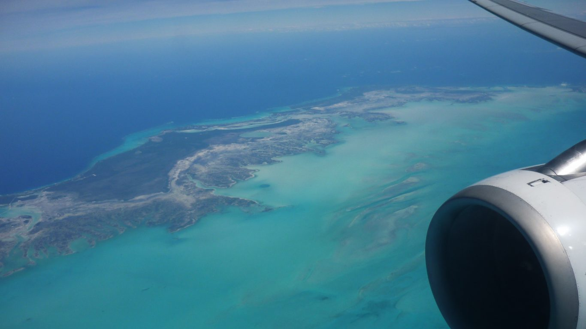

Travel arrangments

Widely acclaimed as Australia’s Galapagos, Kangaroo Island is home to an abundance of native wildlife and spectacular natural attractions. Covering almost 4,500 square kilometres it is Australia’s third largest island and offers the best of the mainland on a smaller, more intimate scale. With more than one third of the island declared as Conservation or National Park, visitors readily come face-to-face with prolific bird and animal species such as New Zealand fur seals, koalas, kangaroos, Australian sea lions, ospreys, echidnas and much, much more. Flanked by the indomitable Southern Ocean, dramatic coastal vistas and sculptured landscapes lay unspoiled by development and riddled with sheer limestone cliffs, sheltered coves, rocky headlands and deserted stretches of sugar-white sand. Against this stunning natural backdrop rests a distinguished epicurean culture, ably supported by a profusion of fresh seafood, unique local produce and the acclaimed vignerons of South Australia’s Coonawarra, Barossa Valley, McLaren Vale, Adelaide Hills and Clare Valley regions. A veritable feast for the senses, Kangaroo Island is a beacon for discerning travellers wishing to experience the very essence of Australia.